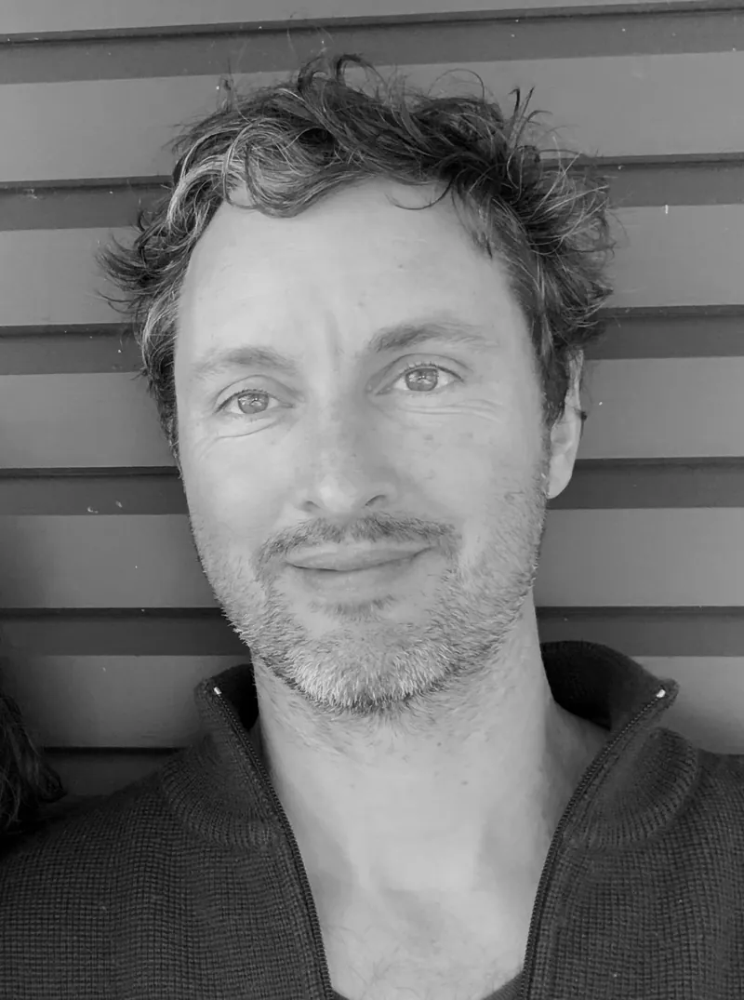

About
Born 1974 in Australia, André Bowen is an oil painter whose work spans still life, landscape, and the figure. After studying at the National Art School in Sydney and the Art Students League of New York, he spent a decade living and painting in Leipzig and Berlin, Germany, before returning to Australia.
His landscapes are painted on location — in the Northern Rivers of New South Wales, on the New Zealand South Island during a residency at the Nock Art Foundation in Queenstown, and across the streets and canals of Berlin. His still lifes share the same directness: objects observed closely, painted from life in natural light.
André was awarded the Defiance Gallery Prize at the Paddington Art Prize in 2018, which led to a solo exhibition at Defiance Gallery, Mary Place, in 2019. His work is held in private collections in Australia, the United States, and Europe.
He is currently living and working in the Northern Rivers of New South Wales.